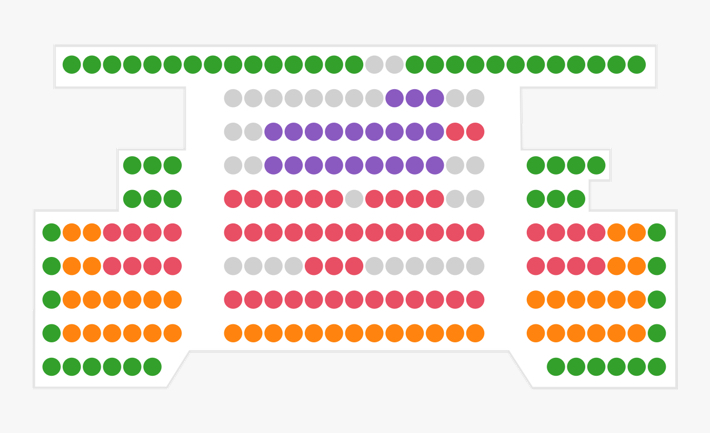
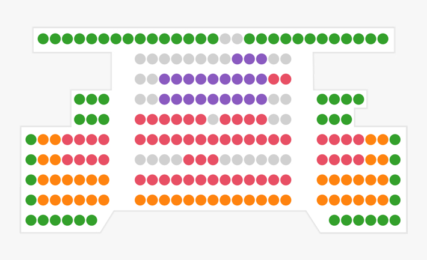

Accessibility and usability for those with
colorblindness has been a perennial issue in multiple forms of
media. Especially in digital media, many sites are designed solely
with those who can see the full visible color spectrum
(common-type color vision) in mind. In 1998, Congress amended the
1973 Rehabilitation Act (Section 508) to require that Federal
electronic information be made accessible to all peoples with
disabilities, including those with colorblindness. But this only
applies to federal electronic information, and there are still a
number of issues that crop up:
- One Redditor complained that their township required a
color-based verification to send emails to their local government,
which thus made such communications impossible for those with
colorblindness.
- The presentation of data in the form of graphs & charts are
notoriously bad for colorblindness. Often, shades of color in
charts such as pie charts will look similar through the eyes of
one or multiple types of colorblindness.
Along with issues at the Federal level, there are a number of
other digital mediums that have difficulty with accessibility for
those with colorblindness:
- Sites through which you can purchase tickets may have poor
colorblind accessibility. When seats are color-coded, these colors
can look incredibly similar to some people with certain
color-blindnesses, which makes it difficult to figure out what
color means what.
- In a number of popular video game franchises, such as Fifa and
Battlefield, colorblind accessibility leaves much to be desired.
Multiple elements blend into the background. In Fifa, kits of
different teams may appear similar, making it hard to tell who is
on which team. In Battlefield, the sheer number of multicolored
widgets, HUD elements, and trackers make it impossible to tell
what’s going on.
- Many graphing and data visualization softwares use colors
mapping to help users interpret data, which can be difficult to
read with a color vision deficiency.
 
